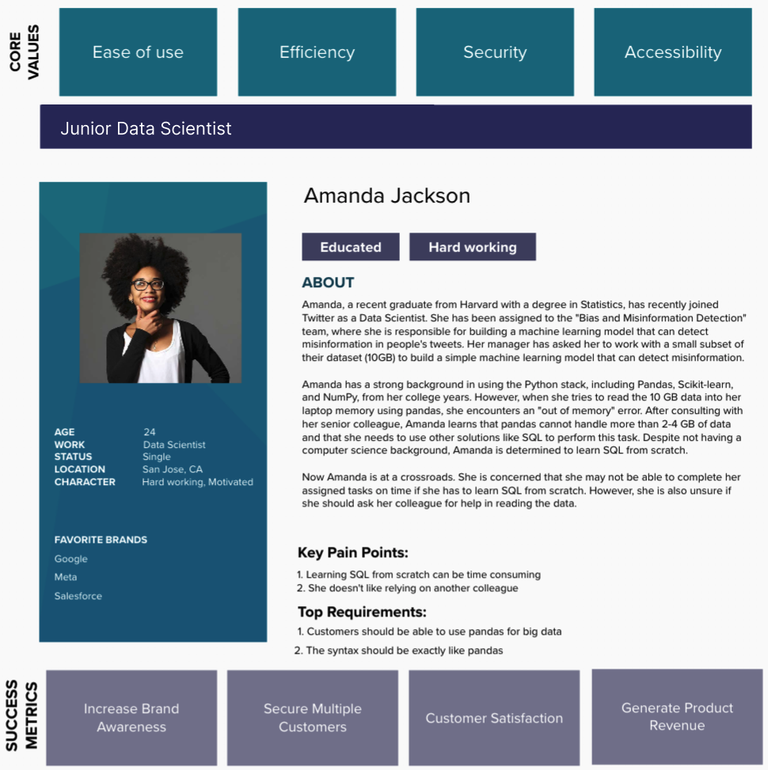
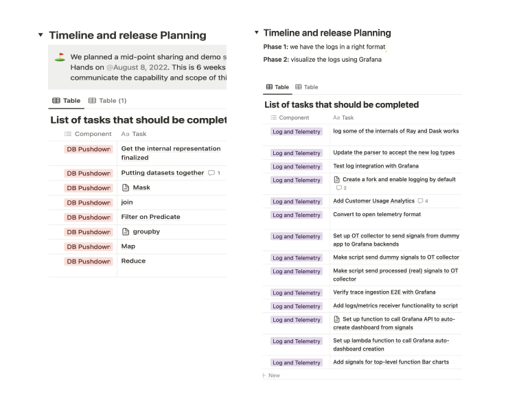
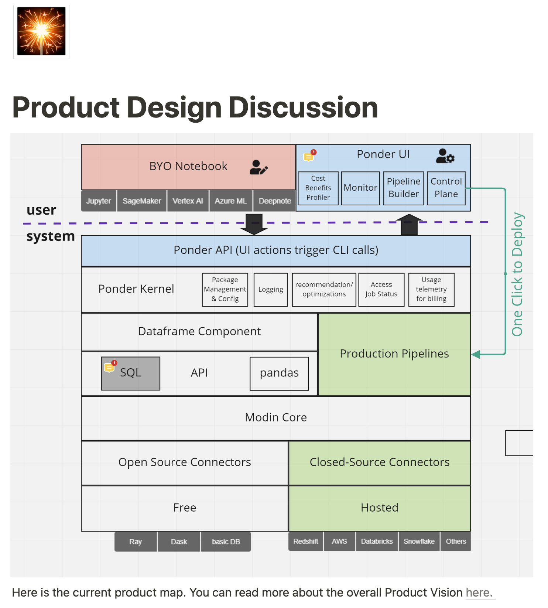
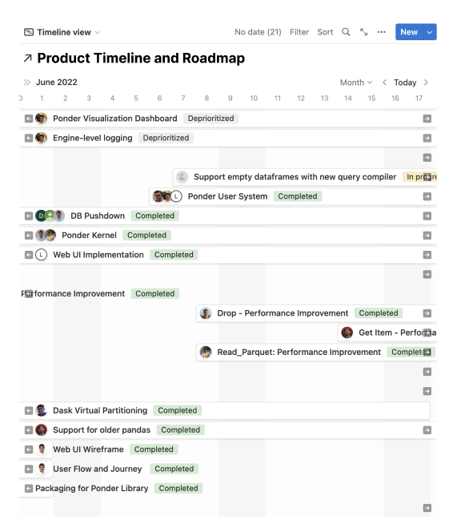
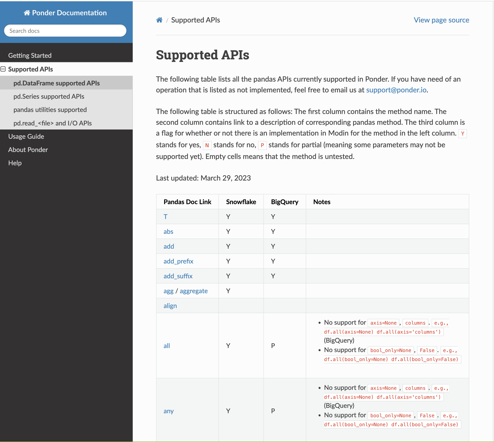
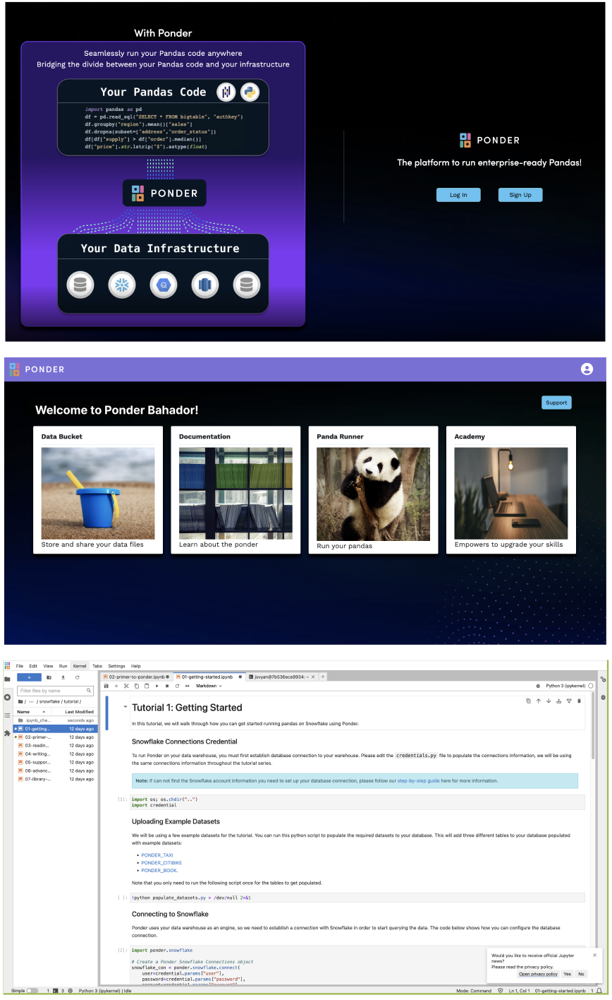
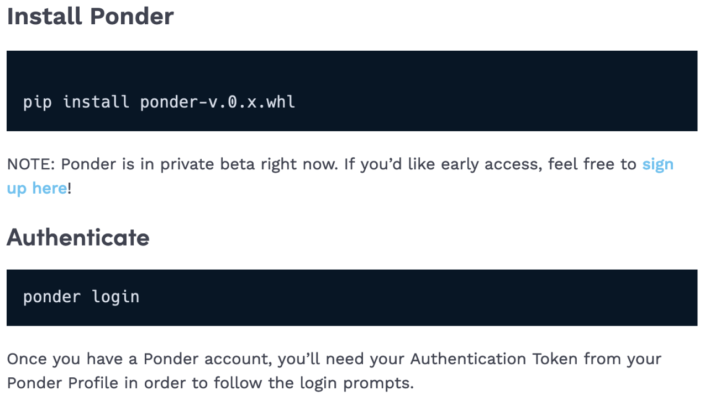

Project Overview
Pandas is a highly popular tool for data science and AI, boasting millions of dedicated users. With its arsenal of over 600 functions, pandas empowers data scientists to efficiently clean, transform, summarize, and featurize data. However, pandas struggles with larger datasets, causing out-of-memory errors and slow performance. As datasets scale, the only viable alternative is to turn to "big data" frameworks like database systems or Spark. Nevertheless, these technologies come with a steep learning curve, particularly for users without a computer science background, necessitating months, if not years, to master. As a result, many data teams continue to prefer using pandas rather than database systems or Spark.During my time at Ponder, I lead development and launch of Ponder's B2B platform, a technology that allows data teams run pandas anywhere at scale, be it their laptops, clusters, or on the cloud. In particular, Ponder allows data teams to run their pandas code directly in their data warehouse, be it Snowflake, BigQuery, or Redshift. Our MVP launch has attracted a lot of community attention and led to the acquisition of early adopters, POC customers, and paying customers.
My Role
- 01. Conducted interviews with with different data teams globally to gain insights and inform the product strategy, leading to the identification of the right product-market fit.
- 02. Prioritized customers needs and converted them to actionable engineering-facing user stories.
- 03. Closely worked with engineering, marketing, sales, and leadership teams to define product roadmap.
- 04. Set data-driven KPI and leveraged user data to drive dynamic marketing and customer acquisition decisions.
- 05. Conducted dogfooding sessions and soft launches as part of the product planning process to ensure that the product is fully tested and ready for a wider audience prior to its official launch.
- 06. Created and maintained product documentation.
- 07. Presented product strategy and roadmap to the leadership.
Duration
8 months
Teams Involved
Engineering, Marketing, Sales, Leadership
Team Size
19 people
...
Customer and Market Research
I conducted extensive customer and market research over a period of several months. Our research involved engaging with more than 100 individual data enthusiasts, data teams from different small and large organizations, as well as leadership at both small and large organizations. We also analyzed the market to gain an understanding of current trends and technologies, as well as their pricing models and target users. Through this comprehensive research process, we were able to gather valuable insights into the needs and preferences of our potential customers, and develop a strategy that meets their unique requirements.
Customer Segmentation
One of the main outcomes of our customer research was to better understand the customers landscape and their segments. In particular, we segmented our customers into two distinct groups: 1) data teams in organizations and 2) individual data enthusiasts.

Customers pain points
- 01. Steep Learning Curve: Many of our participants expressed that one of the major challenges they faced was the difficulty and time-consuming nature of learning "big data" frameworks such as Spark, particularly for junior team members who are just joining the organization. For example, a data scientist at Shopify said: "I find Spark to be quite challenging and overwhelming, especially when it comes to debugging and optimizing my code for large datasets."
- 02. Cluster management: Some of the data teams we spoke with have utilized open-source technologies such as Modin, Dask, and Ray for large data analsyis. However, one of the main challenges that these teams encountered was related to the difficulty in managing clusters they had to created and maintain.
- 03. Cost management: Almost all people we talked to have reported challenges managing the costs of their data science workflows that are executed on different clusters. Another customer at an early stage startup mentioned: "The cost of running our data processing jobs on engines like Databricks is becoming increasingly expensive and is impacting our ability to stay within budget."
- 04. Dependency on team skills: During our conversations, we learned that some individuals rely on the skill sets of their team members, specifically in SQL or Spark, when it comes to dealing with large data. For instance, a data scientist at Amazon mentioned that they frequently ask their colleague to read data from the database using SQL. However, this often leads to delays in their work as they may have to wait for several hours or face additional communication due to differences in the data obtained.
Segment Prioritization
Our research has revealed that the market size for individual data enthusiasts is significantly larger than that of data teams in organizations.
Furthermore, in our discussions with many data enthusiasts, we discovered that they had a strong preference for using pandas for their data analysis.
However, we found that this group of customers is not a great fit for our product becuase they typically don't work with big data. Thus, they rarely need a technology to enbale them to scale their workflows.
On the other hand, data teams in organizations were the ones that faced many issues scaling their pandas workflows because they often deal with big data.
Moreover, they expressed their desire to use our proposed solution on a daily basis and pay for it, as they believe our product can effectively address their current challenges with big data.
Based on these findings, we have decided to shift our focus to target data teams in organizations as our primary customer segment.
Competitive analysis of well-known tools used for scaling pandas
I conducted competitive analysis of well-known libraries and technologies that try to add more power to pandas in various ways. This helped me and the rest of the team in understanding the strengths and weaknesses of each tool and how they stack up against each other.
Key takeaways from my competitive analysis
- 01. Polars and Vaex require the learning of a new syntax, which can be challenging for some of our customers. This challenge was highlighted during our interviews, indicating that there is still a steep learning curve that needs to be addressed.
- 02. Even though Modin is drop-in replacement for pandas, it still require users to manage clusters and use Dask or Ray as engine.
- 03. Mars project is very incomplete. We were not even able to use the library.
| Mars | Polars | Modin | Vaex | |
|---|---|---|---|---|
| Pricing | Open Source | Open Source | Open Source | Custom Pricing |
| Target Users | Anyone | Anyone | Anyone | Data Teams |
| Syntax Simility to pandas | Drop-in replacement | Different Syntax | Drop-in replacement | Different Syntax |
| Coverage | Medium | Large | Large | Large |
| Ease of Use | Easy to use | Not too easy to learn | Easy to use | Hard to learn |
| Limitations | Not complete | New Syntax, learning curve | Uses Dask or Ray as engine | New Syntax, learning curve |
User Persona
To gain a deeper understanding of our target audience's goals, behaviors, motivations, pain points, and preferences, I created multiple user personas. These personas helped the team to design a feature that meet users' needs, expectations, and desires. User personas also help me to communicate with stakeholders by providing a shared understanding of the target users.- 
...
Product Development
Product Requirements
By gathering input from stakeholders and customers, analyzing impact and implementation time, and prioritizing based on these factors, I had multiple meetings with our cross-functional team to identify the most important features and prioritize them. I created a comprehensive list of product requirements that provided detailed descriptions of what needed to be included in our product.- 
System Design Overview
- 
Risk & Mitigation
| Risks | Mitigation |
|---|---|
| The failure to connect to the customer's data warehouse. |
|
| The risk of unauthorized access to sensitive data, resulting in data theft or loss. |
|
| The risk of inadvertently pulling data into memory. |
|
| The risk of executing expensive queries more than one time in a row. |
|
...
Timelines and Milestones
I then collaborated with the engineering team to create a product timeline to help guide the development and delivery of the product to market. Timelines and milestones are important aspects of a product roadmap as they provide a clear structure and timeline for the product development process.
- 
Tracking Timelines and Milestones
I then created a Jira board to track our progress, manage our backlog of work items, and collaborate with each other. We also used Jira for creating and assigning bugs/issues.
...

...
Business Model Canvas
MVP Launch
MVP Documentation
I have been responsible for both creating and maintaining product documentation using Sphinx, an open-source documentation generator, which involves writing clear and concise documentation using reStructuredText markup language and updating it regularly to ensure accuracy and relevance.
- 
MVP Design
Below, I have provided a series of screenshots to illustrate the step-by-step process that users must follow in order to work with Ponder platform.
- 1. The user signs up to the Ponder platform to create an account.
- 2. Upon signing in, the user sees multiple tiles including Documentation, Ponder Academy, Panda Runner, and Data Bucket.
- 3. To try the cloud version of Ponder, users can click on Panda Runner, which will launch JupyterHub, allowing them to start writing scalable pandas code.
- 
For those users who prefer using Ponder in their own development environment, they could install Ponder by importing pip install ponder in their work environment.
- 